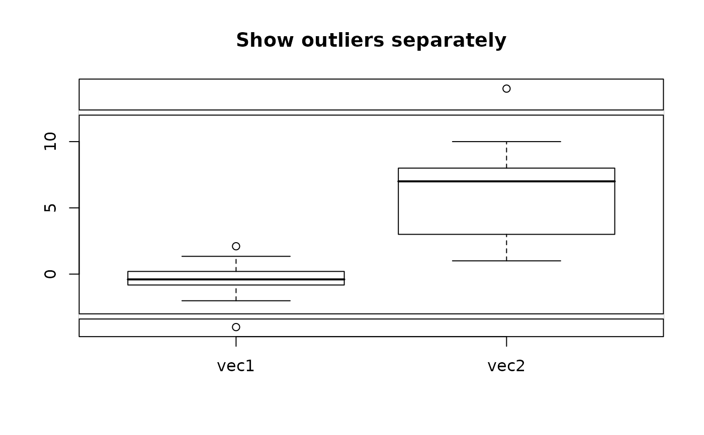

Display a boxplot with a gap (missing range)
gap.boxplot.RdDisplays a boxplot with a missing range.
Usage
gap.boxplot(x,...,gap=list(top=c(NA,NA),bottom=c(NA,NA)),
range=1.5,width=NULL,varwidth=FALSE,notch=FALSE,outline=TRUE,
names,xlim=NA,ylim=NA,plot=TRUE,border=par("fg"),col=NULL,log="",
axis.labels=NULL,axes=TRUE,pars=list(boxwex=0.8,staplewex=0.5,outwex=0.5),
horizontal=FALSE,add=FALSE,at=NULL,main=NULL,xlab="",ylab="")Arguments
- x
numeric vector or a list of vectors
- ...
arguments passed to boxplot.
- gap
the range(s) to be omitted - a list with two components, top and bottom each specifying a range to omit. The default range of c(NA,NA) means no omitted range
- range
how far to extend the whiskers, (see boxplot)
- width
the relative widths of the boxes
- varwidth
if TRUE, box widths are proportional to the square roots of the number of observations
- notch
whether to display the confidence intervals for the median as notches
- outline
whether to display outliers
- names
optional names to display beneath each boxplot
- xlim,ylim
Optional x and y axis limits for the plot.
- boxwex
scale factor for box widths
- staplewex
staple width proportional to box width
- outwex
outlier line width
- plot
dummy argument for consistency with boxplot - always plots
- border
optional color(s) for the box lines
- col
optional color(s) to fill the boxes
- log
whether to use a log scale - currently does nothing
- axis.labels
Optional axis labels.
- axes
Whether to display axes.
- pars
optional parameters for consistency with boxplot
- horizontal
whether to plot horizontal boxplots - currently does nothing
- add
whether to add the boxplot(s) to an existing plot - currently does nothing.
- at
optional horizontal locations for the boxplots.
- main
a title for the plot.
- xlab,ylab
X and Y axis labels.
Value
A list with the same structure as returned by boxplot, except that the values of elements beyond the gap(s) have their true positions on the plot rather than the original values. For example, in the second example, the value returned for the upper staple of the right boxplot is 14 rather than 20, due to the 6 unit gap.
Details
Displays boxplot(s) omitting range(s) of values on the top and/or bottom of the plot. Typically used when there are outliers far from the boxes. See boxplot for more detailed descriptions of the arguments. If the gaps specified include any of the values in the stats matrix returned from boxplot, the function will exit with an error message. This prevents generation of NAs in indexing operations, which would fail anyway. A gap can include part of a box, but it is unlikely that this would be intended by the user.
See axis.break for a brief discussion of plotting on discontinuous coordinates.
Examples
twovec<-list(vec1=c(rnorm(30),-6),vec2=c(sample(1:10,40,TRUE),20))
gap.boxplot(twovec,gap=list(top=c(12,18),bottom=c(-5,-3)),
main="Show outliers separately")

if(dev.interactive()) par(ask=TRUE)
gap.boxplot(twovec,gap=list(top=c(12,18),bottom=c(-5,-3)),range=0,
main="Include outliers in whiskers")
par(ask=FALSE)